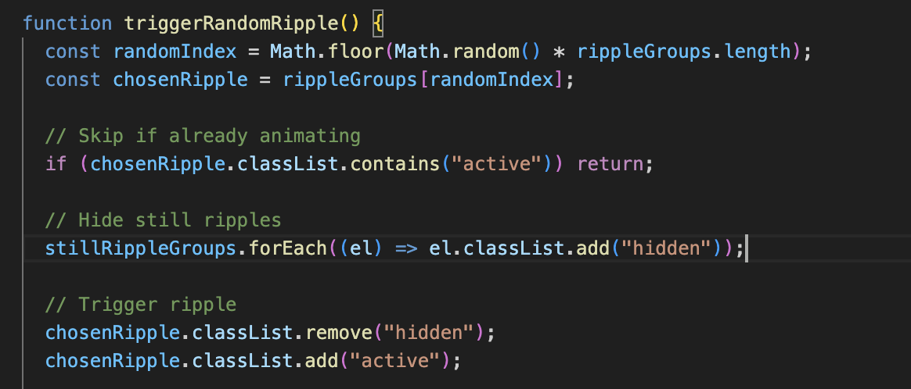

Assignment 1
skip to
Project
Speculation
My project is inspired by a simple childhood toy: wooden building
blocks. These toys represent an early experience of creativity,
where children can build and imagine freely using a small set of
simple materials. With only a few blocks, children can create
castles, towers, cars, and other imaginative structures.
This sense of limitless creativity forms the foundation of the
project. The project expands on this idea by exploring how childhood
play can be translated into sound through interactive digital
design. By transforming the act of building with blocks into a
sound-generating system, the tool allows users to explore how visual
creativity can produce playful musical patterns.

The design of the tool is guided by 2 interaction design
principles.
1. Mapping
Using the visual properties of the blocks, such as their shape or position, to influence specific sounds or musical elements, allowing users to hear how their visual arrangements shape the resulting composition.
2. Feedback
Using the system responds to the user’s actions through both visual animations and sound, allowing users to immediately hear and see the results of their interactions.

Purpose
The purpose of this project is to provide users with a simple
interactive tool where they can build structures using digital
blocks and transform those constructions into sound. By dragging and
arranging blocks on the screen, users are able to experiment with
how different shapes and positions influence the sounds that are
produced.
The end goal of the tool is to allow users to create playful sound
compositions through visual construction. Rather than focusing on
producing perfect or professional music, the tool encourages users
to explore, experiment, and enjoy the creative process through
simple and intuitive interaction.
Worth
The worth of this project lies in its ability to reconnect users
with the playful and imaginative mindset often associated with
childhood. Many people grow up using simple toys such as building
blocks to explore creativity without rules or expectations. This
project aims to bring back that sense of freedom and curiosity
through an interactive digital experience.
Using the style and colours to make the website feel bright,
playful, and light-hearted. Through colourful blocks, simple
interactions, and toy-like sounds, the tool creates an environment
that encourages users to experiment and have fun. The experience
focuses less on technical skill and more on the joy of discovery.
In doing so, the project highlights how interactive digital tools
can recreate moments of play and imagination, allowing users to take
a small break from everyday pressures while engaging in a simple and
creative activity.

Framing
This project will be developed using HTML, CSS, and JavaScript, with the audio component supported by Tone.js. Tone.js enables the tool to generate playful, toy-like sounds that respond dynamically to user interactions.
Users will drag and place digital blocks onto the interface to build structures. Each block represents a sound element, such as a bell tone, drum hit, or melodic note, while the block’s position influences qualities like pitch or tone. In this way, the spatial arrangement of blocks shapes the resulting sound composition.
Sound playback may occur through a looping sequence or a play
function after the user completes their structure, with the final
method determined through experimentation. This system allows
users to explore how visual construction can translate into sound.
The interaction demonstrates key design principles such as
mapping, where block properties correspond to musical elements,
and feedback, where visual and audio responses immediately reflect
the user’s actions.
Inspiration
Musical Text Editor
Similar to my project, this tool maps a visual input to sound. In
this case, each letter typed into the editor is mapped to a musical
tone, allowing users to generate a sound composition through writing
text. My project follows a similar principle, but instead of mapping
letters to sounds, it maps blocks to sound elements.
Conceptually, both projects explore how simple and familiar tools
can be transformed into creative sound-making systems. The Musical
Text Editor demonstrates how an everyday interaction, such as
typing, can become a playful method of composing sound. This
emphasis on simplicity and accessibility aligns with my project’s
intention of encouraging exploration and experimentation.
The tool also highlights the importance of curiosity and discovery.
By allowing users to experiment freely with letters, the project
invites playful interaction while keeping the interface
light-hearted and approachable. This approach influenced my
project’s direction, particularly the idea that a simple interaction
system can encourage users to explore creativity without requiring
prior musical knowledge.
Patatap
Patatap is an interactive audiovisual tool that maps keyboard inputs
to different sounds and visual animations. Each key on the keyboard
triggers a unique combination of colour, movement, and sound,
creating an expressive and playful experience for the user.
The bright colours and dynamic visuals of Patatap helped inspire the
visual direction of my project. Keeping the colours bright to
attract users hence leading me to thinking of a children's toy. The
tool demonstrates how strong visual feedback can enhance user
interaction, making each input feel responsive and engaging. This
connection between user action and audiovisual response is an
important element that I aim to incorporate into my own project.
Another key aspect of Patatap is the freedom it offers users to
experiment without strict rules or objectives. Users can freely
press keys to generate sounds and visuals, allowing them to create
unique audiovisual compositions through exploration. This sense of
open-ended play strongly relates to my project’s concept of
recreating childhood creativity, where users are encouraged to
experiment and build freely using simple tools.
Incredibox
Similar to my project, this tool maps a visual input to sound. In
this case, each letter typed into the editor is mapped to a
musical tone, allowing users to generate a sound composition
through writing text. My project follows a similar principle, but
instead of mapping letters to sounds, it maps blocks to sound
elements.
Conceptually, both projects explore how simple and familiar tools
can be transformed into creative sound-making systems. The Musical
Text Editor demonstrates how an everyday interaction, such as
typing, can become a playful method of composing sound. This
emphasis on simplicity and accessibility aligns with my project’s
intention of encouraging exploration and experimentation.
The tool also highlights the importance of curiosity and
discovery. By allowing users to experiment freely with letters,
the project invites playful interaction while keeping the
interface light-hearted and approachable. This approach influenced
my project’s direction, particularly the idea that a simple
interaction system can encourage users to explore creativity
without requiring prior musical knowledge.
Patatap
Patatap is an interactive audiovisual tool that maps keyboard
inputs to different sounds and visual animations. Each key on the
keyboard triggers a unique combination of colour, movement, and
sound, creating an expressive and playful experience for the user.
The bright colours and dynamic visuals of Patatap helped inspire
the visual direction of my project. Keeping the colours bright to
attract users hence leading me to thinking of a children's toy.
The tool demonstrates how strong visual feedback can enhance user
interaction, making each input feel responsive and engaging. This
connection between user action and audiovisual response is an
important element that I aim to incorporate into my own project.
Another key aspect of Patatap is the freedom it offers users to
experiment without strict rules or objectives. Users can freely
press keys to generate sounds and visuals, allowing them to create
unique audiovisual compositions through exploration. This sense of
open-ended play strongly relates to my project’s concept of
recreating childhood creativity, where users are encouraged to
experiment and build freely using simple tools.
In Conclusion...
Overall, I’m genuinely proud of this website and the process it took
to create it. It wasn’t easy, there were moments of uncertainty,
constant iteration, and technical roadblocks, but I’m glad I
persevered and kept refining it.
If I had more time, I’d love to expand the site by introducing
different themes, each with its own background, colour palette, and
matching soundscape, to give users more ways to shape their calming
experience.
This project taught me a lot, both technically and creatively. I’ve
gained a deeper understanding of how interaction, sound, and visual
design can work together, and I’m excited to apply these skills and
insights to future projects.
jump back
Jannalyn Tan- s4056775